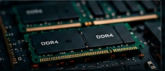
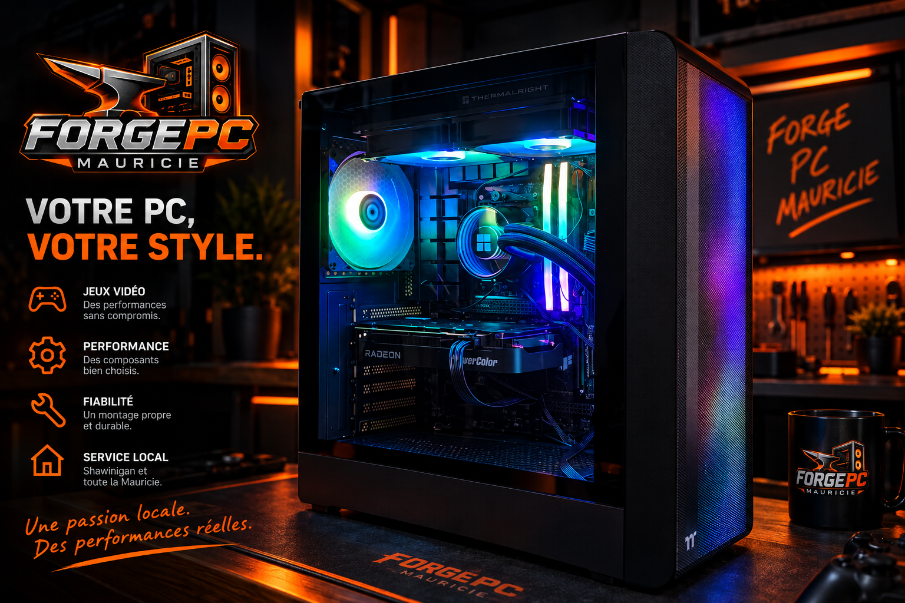

PC REMIS À NEUF
Des ordinateurs sélectionnés, nettoyés, testés et prêts à utiliser.
Voir l'inventaire →Réparer. Améliorer. Optimiser.
Ici, en Mauricie.
Des ordinateurs sélectionnés, nettoyés, testés et prêts à utiliser.
Voir l'inventaire →

Des configurations adaptées à vos besoins et à votre budget.
Discuter de votre projet →Vous nous expliquez votre problème ou votre besoin.
On fait un diagnostic et on vérifie ce qui est nécessaire.
On vous explique les options et les coûts.
Un service fiable et honnête.
Un problème informatique ? On commence par chercher la cause.
Avant de vous conseiller une réparation ou un remplacement, nous évaluons la situation afin de déterminer ce qui vaut réellement la peine d'être fait.
Demander un diagnostic →Shawinigan et toute la Mauricie

Nous offrons nos services à Shawinigan et dans les environs, incluant Trois-Rivières et les municipalités de la Mauricie.
En savoir plus →